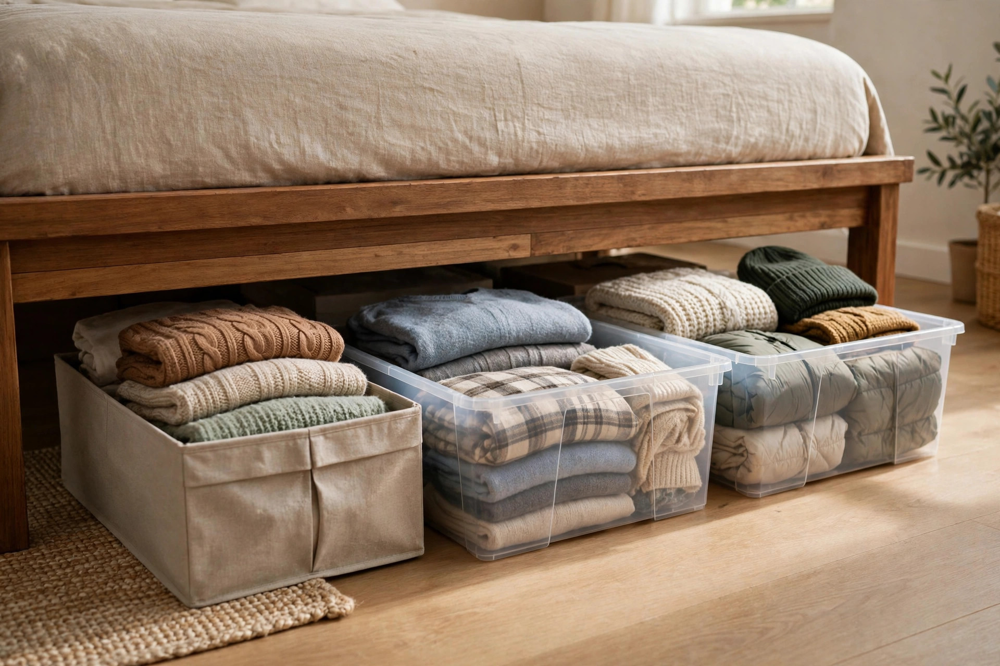

Small Space Storage & Organisation
Small Apartment Under-Bed Storage Ideas for Every Season
Intro
The space under the bed is the biggest storage space in a small apartment — and the most wasted. It is roughly the size of a wardrobe, it costs nothing, and most flats use it for dust and one lost sock. With the right boxes and a simple seasonal system, it can hold a whole season's clothes, bedding and shoes.
This guide has 12 under-bed storage ideas for every season — flat boxes, vacuum bags and a rotation system that takes ten minutes twice a year. Each idea lists what it costs, and none need any drilling or building. Measure the gap under your bed first: most beds leave 15–25 cm of space.

1. Flat clear boxes with lids — $15–$25
Flat, clear boxes on wheels are the easiest under-bed storage there is. Four boxes cost about $20 and hold off-season clothes, extra bedding or shoes. Clear sides mean you can see what is inside without pulling every box out. Choose boxes with lids, so dust stays out, and wheels, so they slide easily on hard floors.
2. Vacuum bags for bulky winter clothes — $10–$15
Vacuum bags shrink thick jumpers, coats and duvets to a third of their size. A pack of six costs about $12 and fits under even a low bed. Roll the air out by hand or use a vacuum cleaner, then seal the bag. Keep one bag per category — jumpers in one, coats in another — so you only open the bag you need.
3. A seasonal rotation system — $0
Twice a year, swap what is under the bed. In spring, winter clothes go under the bed and summer clothes come out; in autumn, reverse it. The swap takes about ten minutes if the boxes are labelled. This one habit means the wardrobe only ever holds the clothes for the season you are in, and the under-bed space is never wasted.
4. Shoe organisers under the bed — $8–$12
A flat shoe organiser with twelve pockets holds the shoes you are not wearing this season. It costs about $10 and slides under the bed in one piece. Keep boots in winter and sandals in summer under the bed, and only the current season's shoes by the door. Clear pockets show every pair at a glance.
5. Linen storage for spare bedding — $10–$15
Spare sheets, duvet covers and pillowcases fit neatly in two flat boxes under the bed. Two boxes cost about $12. Fold each set together — sheet, cover and pillowcase in one bundle — so changing the bed takes one grab, not a search through a pile. Add a lavender sachet to keep the linen fresh.
6. Rolling drawers made for under-bed use — $25–$40
Purpose-made rolling drawers are sturdier than boxes and pull out like a drawer. Two drawers cost about $30 and hold clothes, books or craft supplies. They work best under beds with at least 20 cm of clearance. Measure before you buy: a drawer that is 2 cm too tall is useless.
7. Fabric bags for soft things — $8–$12
Soft fabric storage bags are cheaper than hard boxes and fold flat when empty. Four bags cost about $10 and hold jumpers, blankets and soft toys. They breathe better than plastic, so they suit clothes you will not touch for months. Label each bag with a luggage tag, so you know what is inside.
8. A bed riser for more space — $12–$18
Bed risers lift the bed by 8–13 cm and double the under-bed space. A set of four costs about $15 and fits most bed legs in minutes. Check that the bed stays stable and that you can still sit on it comfortably. The extra height also makes it easier to slide boxes in and out without kneeling.
9. Books and magazines under the bed — $5–$10
A shallow tray or a flat box under the bed holds the books and magazines you are keeping but not reading now. One tray costs about $8. Keep only the books you will actually re-read — the rest belong in a charity bag. A tray with a handle pulls out like a drawer.
10. Kids' toy rotation under the bed — $10–$15
In a tiny flat with children, the under-bed space is the toy cupboard. Two boxes hold the toys not in use this month, and you rotate them every few weeks — old toys feel new again. Two boxes cost about $12. Label one box "this month" and one "next month", and the swap takes five minutes.
11. A dust cover for the whole space — $8–$12
A bed skirt or a dust cover that reaches the floor hides the boxes and keeps dust out. A simple bed skirt costs about $10 and makes the bedroom look tidier in one step. Choose a washable fabric, and pick a colour that matches the bedding so the skirt looks like part of the bed.
12. A label on every box — $0–$5
The best under-bed system fails if you cannot find anything. Label every box on the side that faces out — "winter jumpers", "spare bedding", "summer shoes" — with masking tape and a marker. Labels cost almost nothing and save the ten minutes of pulling out every box to find one thing. Update the labels at each seasonal swap.
Conclusion
Under-bed storage works when it has a system, not just boxes. Labelled boxes, vacuum bags for bulky things, and a ten-minute swap twice a year turn dead space into a whole extra wardrobe. Start with four clear boxes and the labels today, and the space under your bed will be working for you by tonight.
Budget recap
- Four flat boxes + labels: ~$25 - Vacuum bags + shoe organiser: ~$22 - Bed risers: ~$15
Total for a full under-bed system: ~$40–$60 — or ~$20 with boxes alone.
Pinterest pin titles
- Small Apartment Under-Bed Storage Ideas for Every Season
- 12 Under-Bed Storage Ideas — A Whole Extra Wardrobe for Free
- Under Your Bed Is Wasted Space: 12 Ideas to Use It Every Season